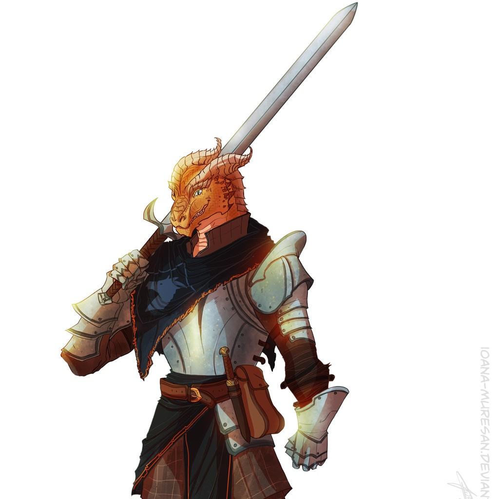
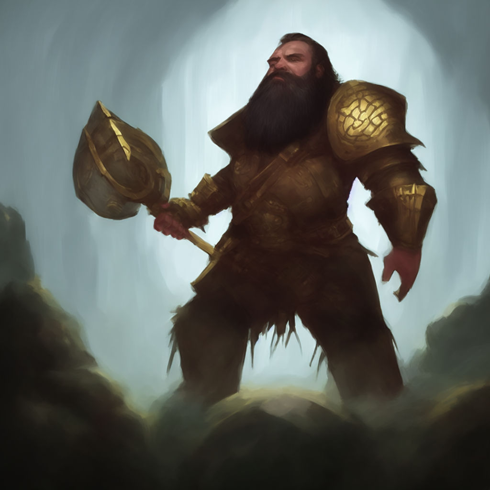

Step 1 is picking your character’s species. A species or race is what a person is. Are they a magical elf, a loud dwarf or are they an unoriginal human. This step sets up what you are and what you look like.
Step 2 will be picking your character’s class. A class is a person’s skill, what they trained to become. Are they a brave knight ready to fight evil, a sneaky thief just looking for his next gold coin, or a powerful wizard looking for knowledge. This step sets up a lot of what your character can do and what they’re good at.
Step 3 will be setting up your character’s stats. Each character is different, some are stronger, some are quicker and some are smarter. Your character’s stats will change how effectively your character can swing a sword, sneak around, or recall information.
Step 4 will have you pick a background and help you figure out your character’s personality. Your character’s background is about where your character came from, what decisions lead your character to where or who he is, what leads him to make new decisions.

Step 5 will talk about your equipment and spells. Not all characters fight with a sword or staff, choosing your equipment can get you some helpful stuff, but also some story behind your character. Not all characters use magic but if they do, they will get to pick what spells they cast.